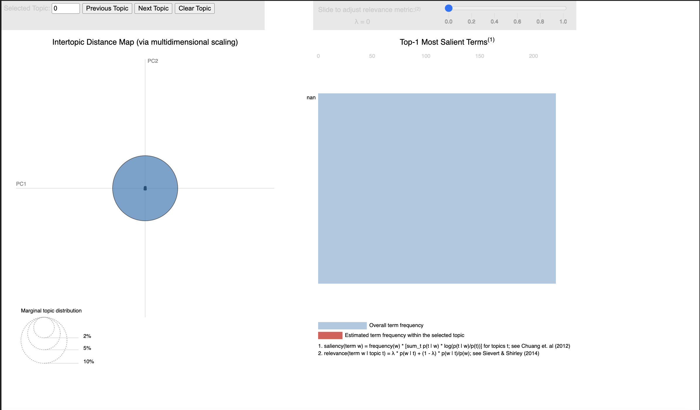
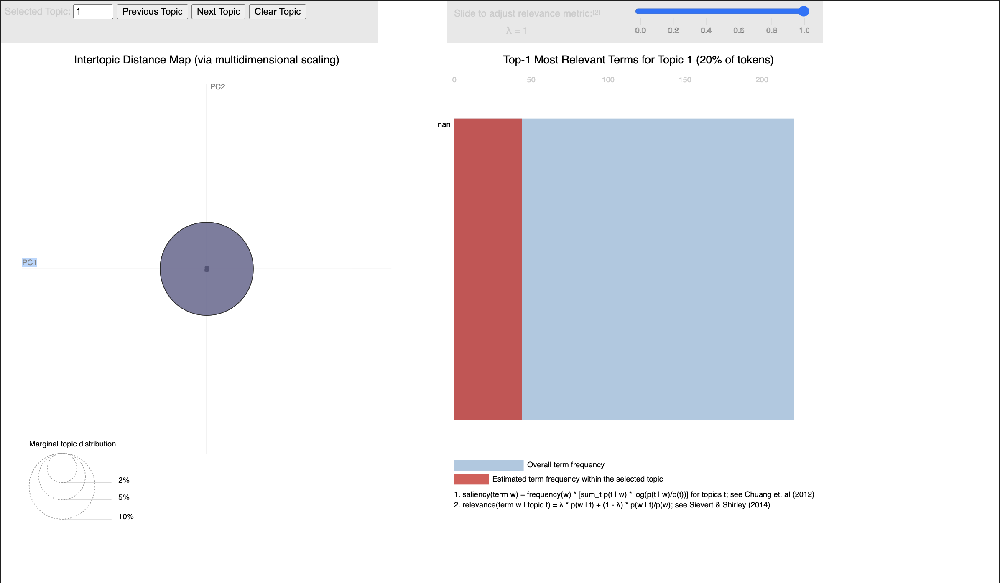
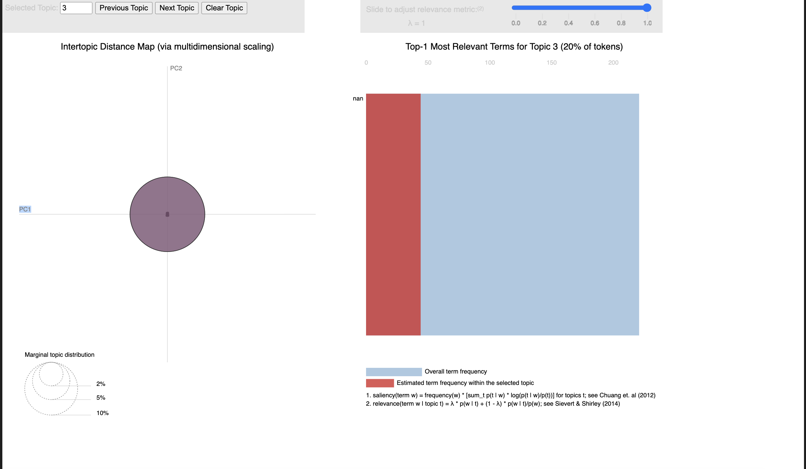

Topic modeling is a type of statistical modeling for discovering the abstract "topics" that occur in a collection of documents. It is frequently used in text mining to uncover hidden semantic structures in a text body. Essentially, topic modeling is a method for identifying and annotating large archives of texts with thematic information.
It works by grouping words into topics based on their distribution across the set of documents; words that frequently occur together are likely part of the same topic. For example, in a dataset of news articles, topic modeling could reveal topics related to 'politics,' 'sports,' 'economy,' etc., based on the clustering of related words.
Topic modeling algorithms, like Latent Dirichlet Allocation (LDA), Non-negative Matrix Factorization (NMF), and Latent Semantic Analysis (LSA), assume that each document in a corpus contains a mixture of topics and that each topic is a mixture of words. To gain information from your data using topic modeling, you would:
By applying topic modeling to your data, you can uncover themes and patterns that may not be apparent through simple observation, helping in organizing, understanding, and summarizing large datasets of unstructured text.
Latent Dirichlet Allocation (LDA) requires a specific format of text data. LDA is a generative statistical model that allows sets of observations to be explained by unobserved groups that explain why some parts of the data are similar. For text documents, these unobserved groups are topics, and the LDA aims to model each document as a mixture of various topics.
To prepare text data for LDA, you typically follow these steps:
Once the data is processed and vectorized, it can be fed into the LDA model. The LDA algorithm then attempts to back out the structure of the topics from the raw counts of words in the documents. It does this by assuming that each document is a mixture of topics, and each topic is a mixture of words.
The 'topics' in this context are not topics in the human sense but rather clusters of words that frequently occur together in your corpus of text data. The model outputs probabilities: for each document, a distribution over topics; for each topic, a distribution over words.
This way, LDA provides a statistical framework for the discovery of abstract topics in a large volume of text. It’s often used in natural language processing and machine learning applications to organize, understand, and summarize large datasets of textual information. It can reveal the underlying themes or discourse in the data, which can be incredibly valuable for exploratory data analysis, content recommendation systems, and as a feature engineering step for further predictive models.
The LDA model can then be applied to this numerical data, which represents the word counts for different terms in the documents. The LDA will output topics represented as a mixture of words, and documents represented as a mixture of topics. The data is not labeled because LDA is an unsupervised technique — it discovers the latent topics on its own without any guidance from pre-assigned categories or labels.
The visualizations you've provided are from pyLDAvis, which is designed to help interpret the topics discovered by a Latent Dirichlet Allocation (LDA) model. Each visualization consists of two main parts:
Further components generally observed in such visualizations include:
From what we can gather without the specific details, each topic visualization represents a different topic extracted from the corpus. It seems there might be a technical issue with the data feeding into the bar chart, indicated by the "nan" label, which suggests that the actual term labels are not being displayed. This could be due to missing data, a processing error, or an issue with the visualization tool itself.
In practical terms, to gain insight from these visualizations, you would look at the position and size of the bubbles on the intertopic distance map to understand how topics relate to each other and their prevalence. Then, by examining the bar chart for each topic, you can discern what each topic is about based on the terms most relevant to that topic.
  